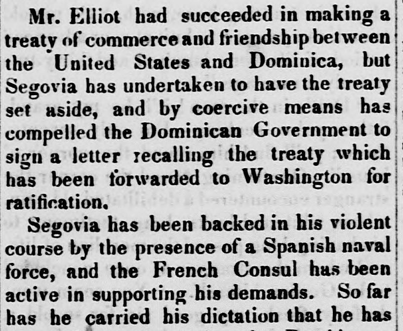

SPANISH INTRIGUES IN ST. DOMINGO.INTRIGAS ESPAÑOLAS EN SANTO DOMINGO.
Houma Ceres. Houma, Parish of Terrebonne, La., September 20, 1856. Page 2. Published by E.W. Blake & Co. A weekly newspaper.Houma Ceres. Houma, Parish of Terrebonne, La., 20 de septiembre de 1856. Página 2. Publicado por E.W. Blake & Co. Periódico semanal. View the originalVer el original

The Houma Ceres reported that Spanish agent Segovia, backed by Spanish naval vessels and French diplomatic support, forced the Dominican government to recall a treaty pending in Washington. Segovia compelled President Santana to resign in favor of Buenaventura Báez and replaced pro-American cabinet members with his own allies. The report warned that Segovia was registering Dominicans as Spanish subjects to bring the entire island under Spanish rule and exclude American influence.El Houma Ceres informó que el agente español Segovia, respaldado por buques de guerra hispanos y el concurso diplomático francés, forzó al gobierno dominicano a retirar un tratado pendiente de ratificación en Washington. Segovia conminó al presidente Santana a dimitir en favor de Buenaventura Báez y sustituyó a los secretarios proclives a Estados Unidos por adictos a su causa. La noticia alertaba de que Segovia matriculaba a ciudadanos dominicanos como súbditos de la corona española con la mira de reincorporar toda la isla a la dominación de España y proscribir el predicamento norteamericano.
The articleEl artículo
Houma Ceres September 20, 185620 de septiembre de 1856
Original in English.Original en inglés.
SPANISH INTRIGUES IN ST. DOMINGO.INTRIGAS ESPAÑOLAS EN SANTO DOMINGO.
We learn from our New York exchanges that the United States Commissioner to the Dominican Republic, Jonathan Elliot, Esq., has returned to this country to lay before the Government at Washington a statement of the intrigues carried on in Dominica by the Spanish Consul, Segovia, against the independence of the Republic and the interest of the United States.Nos enteramos por nuestros intercambios de Nueva York de que el Comisionado de los Estados Unidos ante la República Dominicana, Jonathan Elliot, Esq., ha regresado a este país para presentar ante el Gobierno en Washington una declaración sobre las intrigas llevadas a cabo en Dominica por el cónsul español, Segovia, contra la independencia de la República y los intereses de los Estados Unidos.
Mr. Elliot had succeeded in making a treaty of commerce and friendship between the United States and Dominica, but Segovia has undertaken to have the treaty set aside, and by coercive means has compelled the Dominican Government to sign a letter recalling the treaty which has been forwarded to Washington for ratification.El Sr. Elliot había logrado concertar un tratado de comercio y amistad entre los Estados Unidos y Dominica, pero Segovia se ha propuesto dejar sin efecto el tratado y, mediante medidas coercitivas, ha obligado al Gobierno dominicano a firmar una carta en la que revoca el tratado que ha sido remitido a Washington para su ratificación.
Segovia has been backed in his violent course by the presence of a Spanish naval force, and the French Consul has been active in supporting his demands. So far has he carried his dictation that he has forced Santana to resign the Presidency, and the Vice President acts as President until the arrival of the mulatto Baez, from St. Thomas, when Segovia will instal him in the Presidency. He has also driven Senor Delmonte, who favored American interests, from the Cabinet, and placed in his stead Senor Lavastida, a creature of his own.Segovia ha sido respaldado en su violenta conducta por la presencia de una fuerza naval española, y el cónsul francés ha participado activamente en apoyar sus exigencias. Tan lejos ha llevado su imposición que ha forzado a Santana a renunciar a la Presidencia, y el Vicepresidente actúa como Presidente hasta la llegada del mulato Báez, desde St. Thomas, momento en que Segovia lo instalará en la Presidencia. También ha expulsado del Gabinete al señor Delmonte, quien favorecía los intereses estadounidenses, y ha colocado en su lugar al señor Lavastida, una criatura suya.
Segovia openly declares that his object is to prevent the United States obtaining any influence in St. Domingo, and to bring both the Dominican and Haytien portions of the island under the dominion of Spain. He is already, in fact, absolute dictator in Dominica, and as he has obliged the powerless Dominican government to recognize, as Spanish subjects, a large portion of the population, including native Dominicans as well as negroes and South Americans, who were never under Spanish dominion, the revolution which he is preparing in the interest of Spain may break out any day. There are not a few who believe that Spain and Segovia, its agent, are but the catspaw of France; and this belief is favored by the course of the French Consul.Segovia declara abiertamente que su objetivo es impedir que los Estados Unidos obtengan influencia alguna en Santo Domingo, y someter tanto la parte dominicana como la haitiana de la isla al dominio de España. De hecho, ya es dictador absoluto en Dominica, y como ha obligado al impotente gobierno dominicano a reconocer como súbditos españoles a una gran parte de la población, incluidos dominicanos nativos así como negros y sudamericanos, que nunca estuvieron bajo el dominio español, la revolución que prepara en interés de España puede estallar cualquier día. No son pocos los que creen que España y Segovia, su agente, no son más que el instrumento de Francia; y esta creencia se ve favorecida por la conducta del cónsul francés.
It remains to be seen whether our Government will passively endure the insults to which it has been subject by the insolent interference of this Spanish official with its international and independent rights.Queda por ver si nuestro Gobierno soportará pasivamente los insultos a los que ha sido sometido por la insolente intromisión de este funcionario español en sus derechos internacionales e independientes.